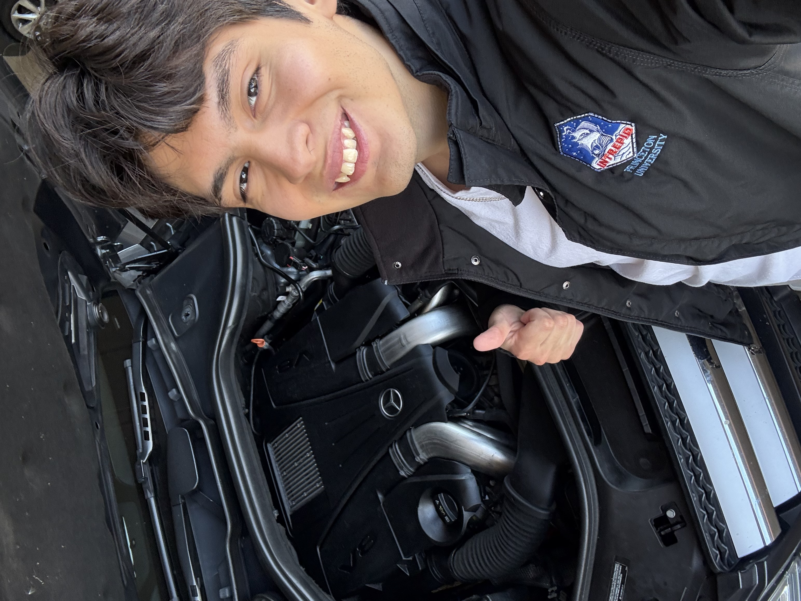
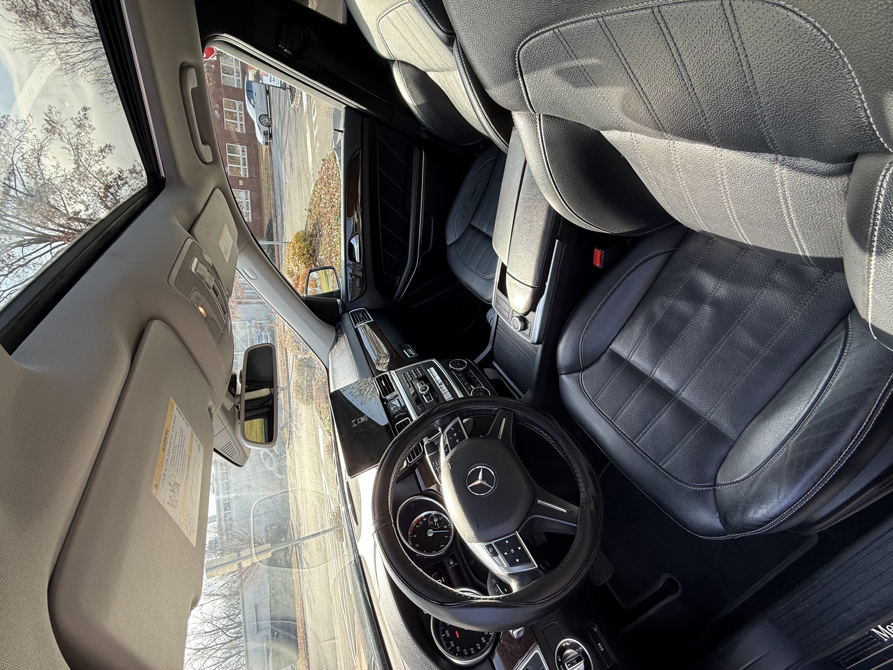
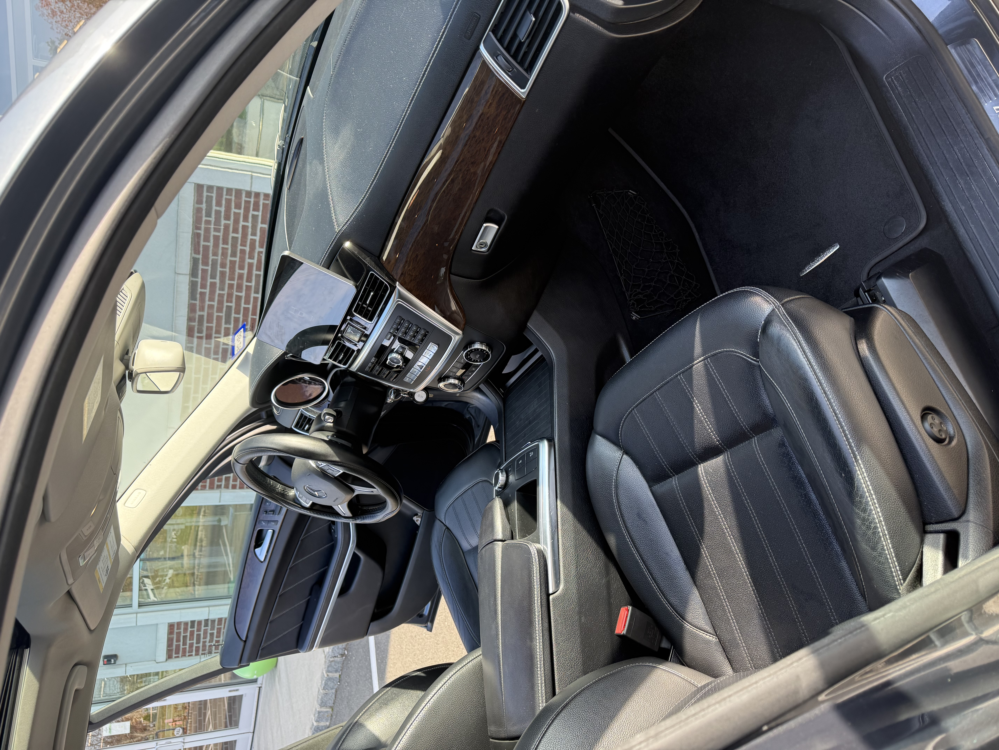
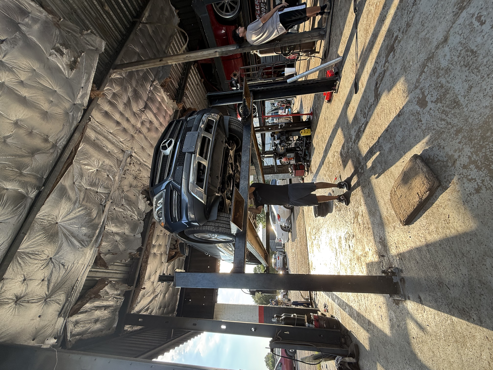
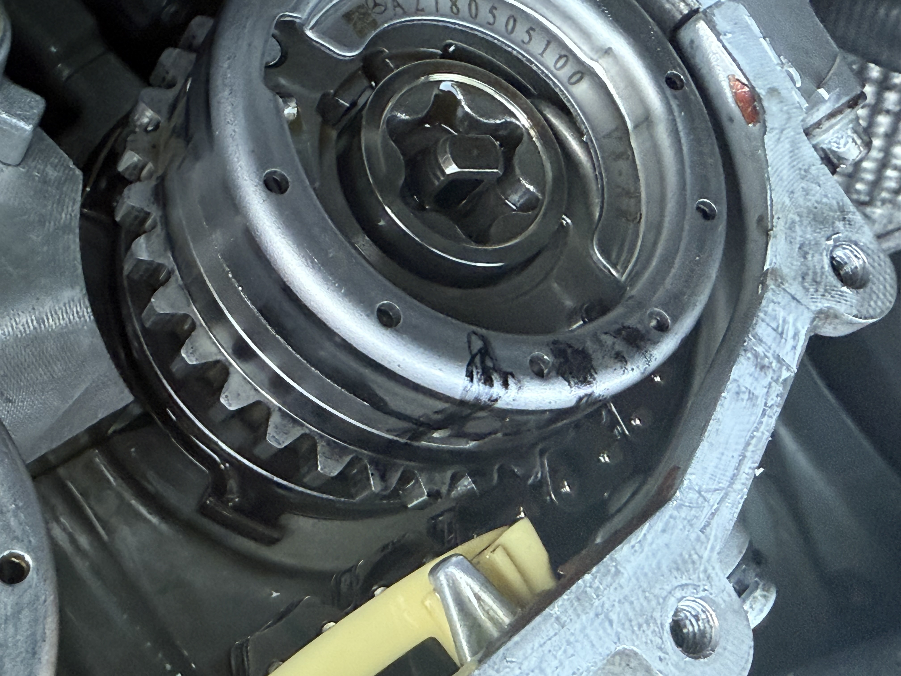
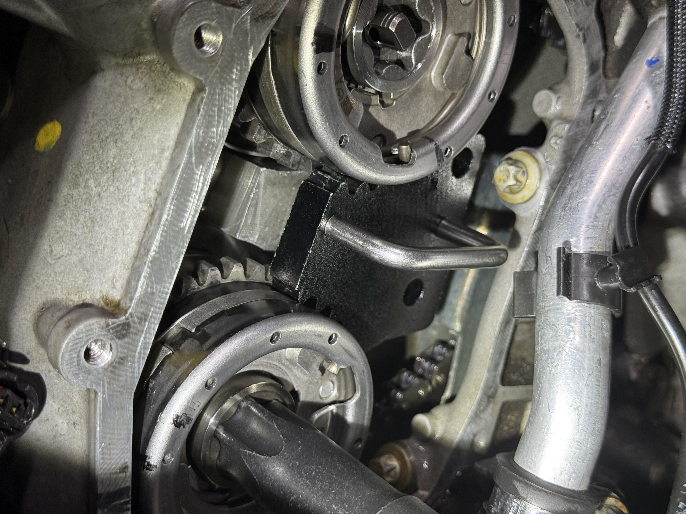
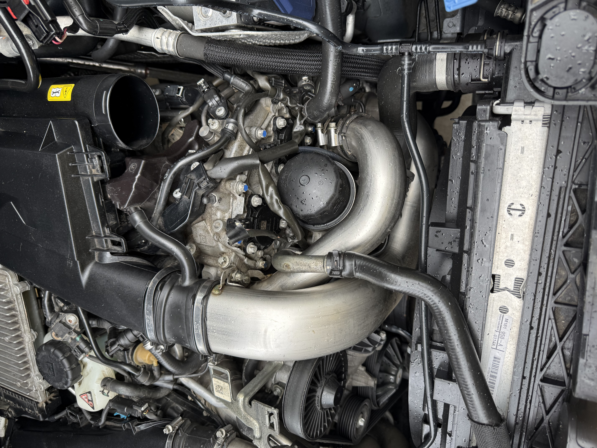
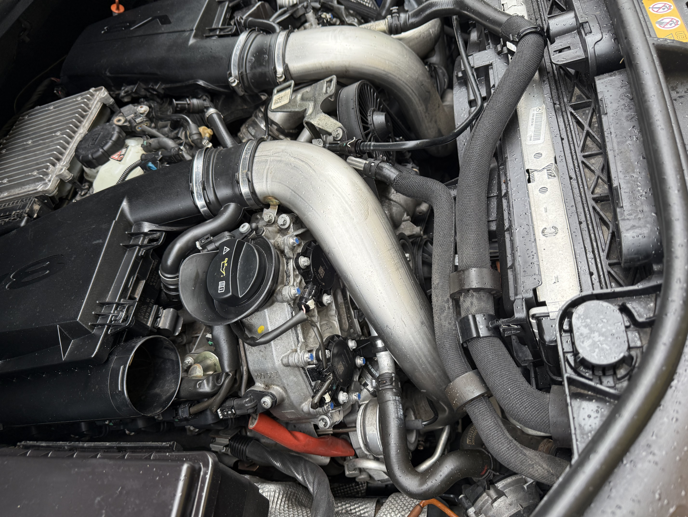
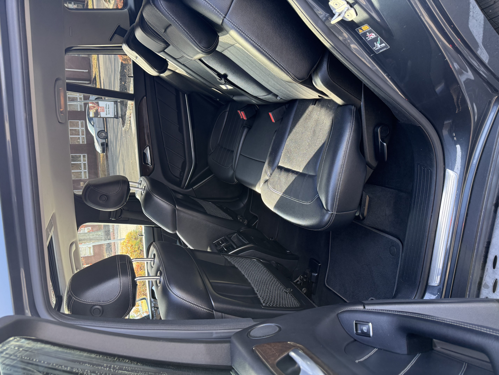

Photo Gallery

Under the hood after complete assembly!

Interior — driver side

Interior — passenger side

Up on a lift to weld in a new catalytic converter

Sharpie marks are used to check the timing chain. Because the camshaft is stuck in position, markings on the chain (slightly above the gear) are difficult to match to the sprocket. Sharpie is used to mark a specific tooth, then a large lever is used to crank the gear into position.

A special tool to hold the gears in place is used while tightening and untightening.

Engine bay — up close

Engine bay — overhead

Engine bay — right side

Reassembly in progress

Reassembly continued

Unit was spliced into the existing stereo and sound system. Mercedes uses fiber optic cable for the sound system.

Rear seats